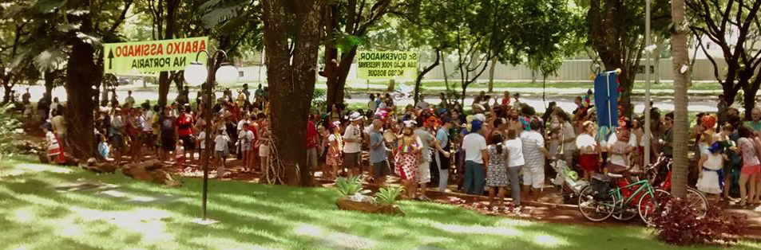
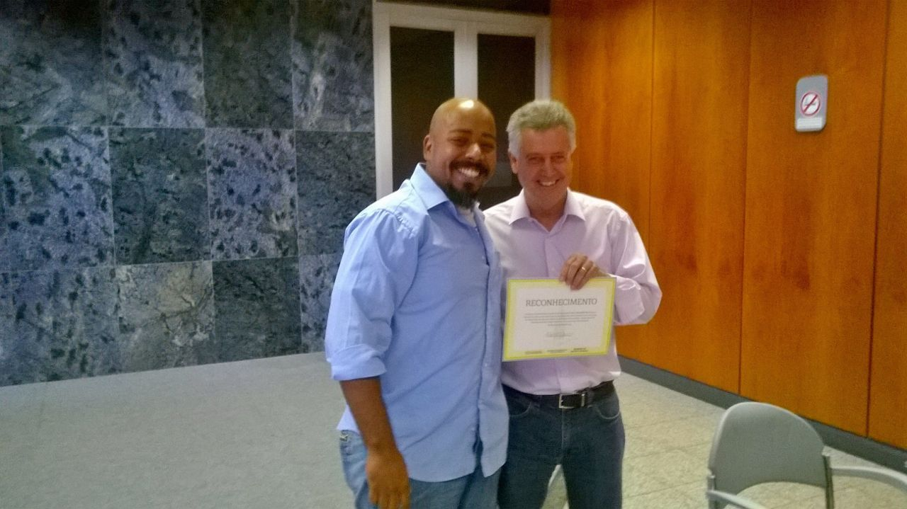
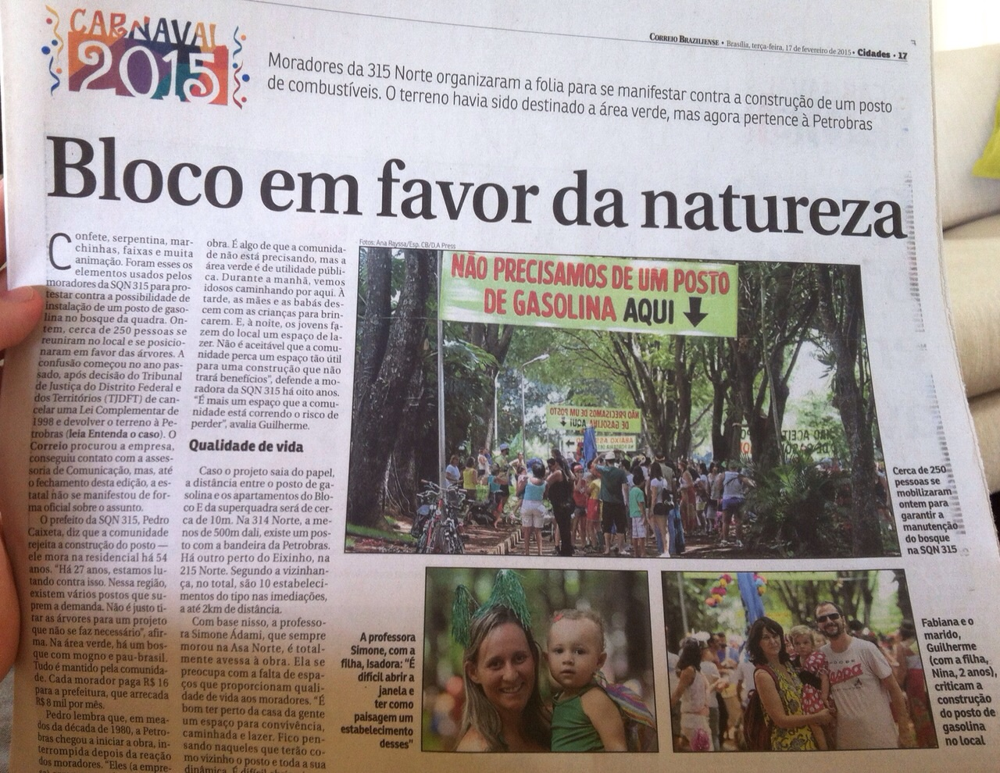
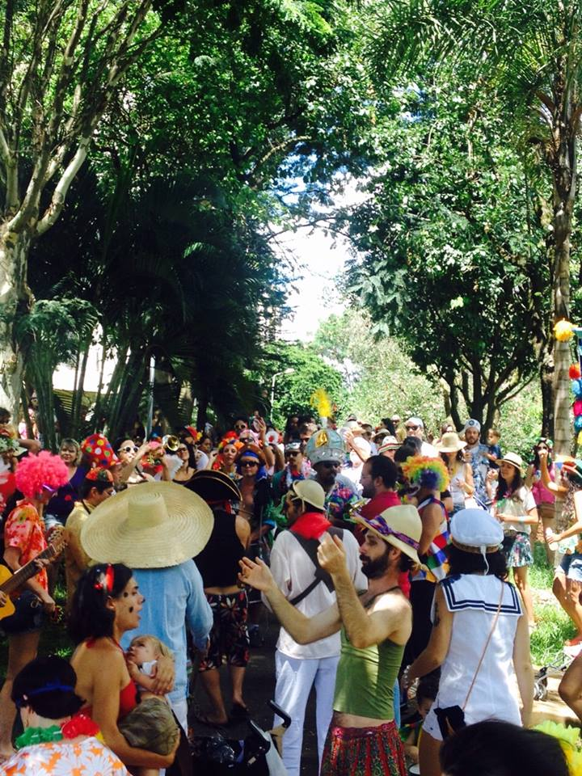

Muito obrigado!
Gratidão é o sentimento mais forte que esse carnaval me deixou.

Nosso cordão não podia ter sido mais bonito. Fizemos dois desfiles lindos, tranquilos, limpos e educados. Exatamente o que nos propusemos a fazer. Foi lindo demais!
Termino a temporada felicíssimo em perceber que todos os amigos mais próximos com quem tive a oportunidade de conversar depois terminaram o carnaval satisfeitos, realizados, e cheios de idéias para o próximo ano. Nenhum outro resultado poderia ter sido mais expressivo do que esse, que sempre foi nosso objetivo principal, e que parece ter sido alcançado. Celebramos nossa amizade e fomos um pouco mais felizes durante aquelas horas juntos.
Obrigado!
Apesar da cartinha sutil que recebemos durante um dos nossos primeiros ensaios esse ano, todos os vizinhos que apareceram durante os dois desfiles vieram foi para elogiar ou para se juntar a nós, acompanhados das crianças que foram correndo em casa se fantasiar.
Achamos essa filmagem no instragram de uma moradora do bloco ao lado do qual nos concentramos no sábado, que não pareceu ter ficado muito aborrecida por ter sido acordada. =)
O Ailton me disse ter puxado alguém pelo braço durante esse começo de desfile para mostrar um velhinho bem idoso que vinha com dificuldade à varanda, andando com a ajuda de um cuidador, para nos ver fantasiados, com nossas crianças, cantando ‘O Abre Alas’. O Ailton me disse ter-se emocionado. E o velhinho, o que será que sentiu?
Outro sinal de que nosso convívio com a vizinhança foi saudável foi a homenagem que por acaso recebemos do governador por não termos deixado lixo pelas ruas.

Significados políticos à parte, não posso deixar de ressaltar o orgulho pela atenção de todos e pela constatação de que estamos conseguindo transmitir os valores cultivados pelo bloco. É maravilhoso perceber que isso fez efeito.
Obrigado!
É claro que nada disso foi nem de longe planejado. Somos um bloco orgulhosamente independente e fizemos questão de não figurar nem nas famosas ‘agendas culturais’ carnavalescas da cidade… bem ‘bixo do mato’ mesmo! Acontece que, por um acaso até engraçado, alguém ligado ao SLU estava presente e parece que o momento político deve ter sido conveniente para alguém. O fato é que ganhamos mais uma história pra contar. =)

Outra história que o desfile de segunda nos rendeu, de surpresa, foi a repercussão de nosso apoio ao protesto dos moradores da 315n contra a eminente construção de um posto de gasolina no lugar daquele lindo bosque. Acabamos acertando (novamente sem querer) um nervo meio inflamado, que nos rendeu duas aparições jornalísticas: no DFTV (fechamento da matéria) e no correio brasiliense. Não era nossa principal intenção, mas foi ótimo saber que nossa humilde contribuição pode ter ajudado mais do que previmos.
Enfim, obrigado!
Para o ano, carrego a certeza de que teremos ainda mais energia que esse ano para fazer um carnaval ainda mais bonito. E carrego junto a certeza do desafio que está por vir. Parece que semeamos bem e soubemos cultivar uma linda plantinha, com raízes fortes. Agora cabe a nós continuar regando para que floresça pomposa, mas acima de tudo o dever de PRESERVA-LA.

Não pretendemos nos próximos anos tornar o bloco maior, ou mais conhecido, ou mais coisa nenhuma desse tipo. Queremos que nosso bloco cresça é ‘pra dentro’. Queremos que se torne mais bonito, que possamos tocar melhor, entoar um coro ainda mais coeso, cultivar valores ainda mais nobres e com ainda mais convicção.
Não queremos aparecer no jornal. Queremos é mais velhos e mais crianças descendo pra brincar!
Espero que no ano que vem vocês todos fiquem de novo!
Um abraço fraterno, um ótimo 2015 a todos,
Bruno.